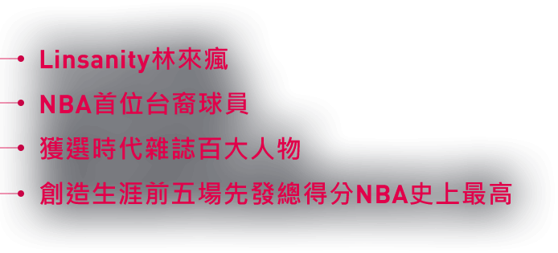
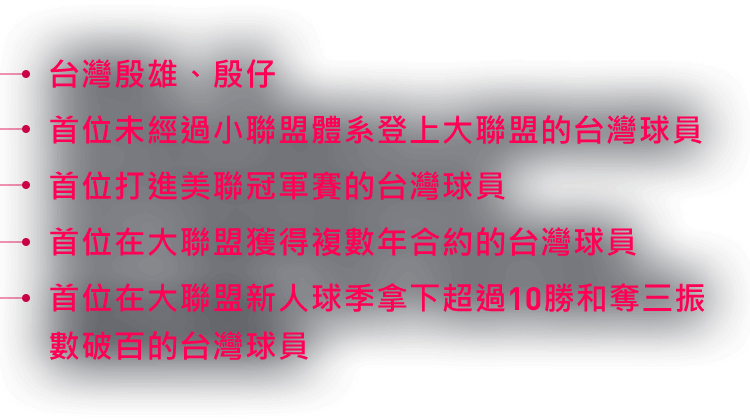
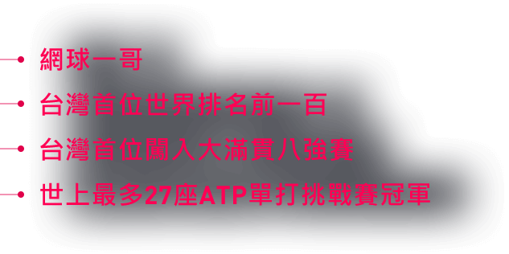

<!doctype html>
<html class="no-js" lang="zh">
  <head>
    <meta charset="utf-8">
    <meta name="description" content="adidas │ Here To Create 由我創造">
    <meta name="keywords" content="adidas, 愛迪達, 籃球, 棒球, 網球, 陳偉殷, 林書豪, 盧彥勳, Here to create, sports base, 訓練課程">
    <meta name="viewport" content="width=device-width, initial-scale=1">
    <title>adidas │ Here To Create 由我創造 </title>

    <meta property="og:title" content="adidas │ Here To Create 由我創造 "/>
    <meta property="og:description" content="adidas │ Here To Create 由我創造"/>
    <meta property="og:url" content="http://www.adidas-campaign.com.tw/heretocreate/event/"/>
    <link rel="apple-touch-icon" href="favi.png">
    <link rel="icon" type="image/x-icon" href="favi.png" />
    <!-- Place favicon.ico in the root directory -->

    <!-- build:css css/vendor.css -->
    <!-- bower:css -->
    <link rel="stylesheet" href="/vendor/malihu-custom-scrollbar-plugin/jquery.mCustomScrollbar.css" />
    <link rel="stylesheet" href="/vendor/bootstrap-formhelpers/dist/css/bootstrap-formhelpers.css" />
    <!-- endbower -->
    <!-- endbuild -->

    <!-- build:css css/main.css -->
    <link rel="stylesheet" href="css/main.css">
    <!-- endbuild -->
    
    <!-- build:js js/modernizr.js -->
    <script src="/vendor/modernizr/modernizr.js"></script>
    <script src="/vendor/detectizr/dist/detectizr.js"></script>
    <!-- endbuild -->
  </head>
  <body>
    <!--[if lt IE 10]>
      <p class="browserupgrade">You are using an <strong>outdated</strong> browser. Please <a href="https://browsehappy.com/">upgrade your browser</a> to improve your experience.</p>
    <![endif]-->
    
    <header role="menu">
      <h1 class="logo">
        <a href="http://www.adidas.com.tw/" target="_blank" data-ga="PC_adidas_LOGO" data-ga-m="Mobile_adidas_LOGO">
          </a>
      </h1>
      <a class="close visible-xs" href="javascript:">
          <figure class="x" data-src="img/close.png"></figure>
          <figure class="burg" data-src="img/burg.png"></figure></a>
      <a class="fb" href="https://www.facebook.com/adidasRunningTW/" target="_blank" data-ga="PC_FB" data-ga-m="Mobile_FB">
          
          </a>
      <!--選單-->
      <figure class="visible-xs menu-bg" data-src="img/menu-bg@2x.png"></figure>
      <nav class="menu fontsize-15 ">
        <a class="active" href="javascript:" data-ref="home" data-href="./">
          
          </a>
        <a href="javascript:" data-ref="form" data-href="./form/">
          
          </a>
        <a href="javascript:" data-ref="rule" data-href="./rule/">
          
          </a>
      </nav>
      <!--./選單-->
    </header>
    <section id="container" role="container">

      <section id="content" class="home" role="content">
        <section class="kv active" data-ga-pv="PC_index" data-ga-pv-m="Mobile_index">
          <figure class="background hidden-xs" data-src="img/home/kv-background.jpg">
            <figure class="here-to-create"></figure>
          </figure>
          <figure class="background visible-xs" data-src="img/home/kv-background@2x.jpg">
            <figure class="here-to-create"></figure>
          </figure>
          <figure class="visual hidden-xs" data-src="img/home/kv.png">
          </figure>
          <figure class="visual visible-xs" data-src="img/home/kv@2x.png">
          </figure>
          <figure class="shadow hidden-xs" data-src="img/home/kv-inner-shadow.png"></figure>
          <figure class="text">
            </figure>
          <a class="cfa" data-href="form/" data-ref="form" href="javascript:" data-ga="PC_go_0" data-ga-m="Mobile_go_0">
            <figure class="cfa"></figure>
          </a>
          <figure class="cfa-bg" data-src="img/home/cfa-bg.png">
            
          </figure>
          <figure class="scroll hidden-xs" data-src="img/home/scroll-hint.png"></figure>
          <figure class="scroll visible-xs" data-src="img/home/scroll-hint@2x.png"></figure>
        </section>
        <article class="lin active" data-ga-pv="PC_story1" data-ga-pv-m="mobile_story1">
          <figure class="background hidden-xs" data-src="img/home/lin/background.png"></figure>
          <figure class="background visible-xs" data-src="img/home/lin/background@2x.png"></figure>
          <aside class="parallax">
            <aside class="layer headline" data-depth="0.01">
              <h3 class="hidden-xs"></h3>
              <h3 class="visible-xs"></h3>
            </aside>
            <aside class="viewport layer headline" data-depth="0.03">
              
              
              <ul class="fontsize-14 hide">
                <li>Linsanity林來瘋</li>
                <li>NBA首位台裔球員</li>
                <li>獲選時代雜誌百大人物</li>
                <li>創造生涯前五場先發總得分NBA史上最高</li>
              </ul>
            </aside>
            <figure class="pic-1 layer" data-depth="0.10">
              <figure class="hidden-xs" data-src="img/home/lin/pic1.png"></figure>
              <figure class="visible-xs" data-src="img/home/lin/pic1@2x.png"></figure>
            </figure>
            <figure class="pic-2 layer" data-depth="0.05">
              <figure class="hidden-xs" data-src="img/home/lin/pic2.png"></figure>
              <figure class="visible-xs" data-src="img/home/lin/pic2@2x.png"></figure>
            </figure>
            <aside class="viewport layer">
                
                <aside class="text">
                  </aside>
                <aside class="text fontsize-14 hide">
                  <p>「痛苦製造性格，性格製造希望，而希望不會讓我們失望。」－林書豪<!-- <br> -->"Suffering produces character, and character produces hope, and hope <!-- <br> -->does not disappoint us." – Jeremy Lin</p>

                  <p>身為首位台裔NBA球員，林書豪一直以來都承受著他人眼光，即使有實力卻總<!-- <br> -->得不到應有的機會，但他仍持續堅持自己的夢想，從失敗中再次爬起，以信念<!-- <br> -->和鬥志與挑戰正面對決，創造了現在的豪小子。</p>

                  <p>NBA選秀會未被任何球隊選擇，在簽約後甚至遭球隊三次下放發展聯盟，輾轉<!-- <br> -->來到紐約尼克，為當時連敗不止的尼克打出一波七連勝，創造生涯前五場先發<!-- <br> -->總得分NBA史上最高，並締造著名的「林來瘋 Linsanity」現象。美聯社讚譽林<!-- <br> -->書豪的竄起是「NBA裡最激勵人心的故事」！</p>

                  <p class="bold">正如他所說：「我得全力打出自己價值」、「學習成功前，必須先學會失敗」<!-- <br> -->林書豪不斷證明自己，弱者等待機會，強者創造機會。<!-- <br> -->Here to Create.</p>
                </aside>

                <a class="cfa" data-href="form/" data-ref="form" href="javascript:" data-ga="PC_GO_1" data-ga-m="mobile_GO_1">
                  <figure class="cfa"></figure>
                </a>
            </aside>
          </aside>
        </article>
        <article class="chen" data-ga-pv="PC_story2" data-ga-pv-m="mobile_story2">
          <figure class="background hidden-xs" data-src="img/home/chen/background.png"></figure>
          <figure class="background visible-xs" data-src="img/home/chen/background@2x.png"></figure>
          <aside class="parallax">
            <aside class="layer headline" data-depth="0.01">
              <h3 class="hidden-xs"></h3>
              <h3 class="visible-xs"></h3>
            </aside>
            <aside class="viewport layer headline" data-depth="0.03">
              
              
              <ul class="fontsize-14 hide">
                <li>台灣殷雄、殷仔</li>
                <li>首位未經過小聯盟體系登上大聯盟的台灣球員</li>
                <li>首位打進美聯冠軍賽的台灣球員</li>
                <li>首位在大聯盟獲得複數年合約的台灣球員</li>
                <li>首位在大聯盟新人球季拿下超過10勝和奪三振數破百的台灣球員</li>
              </ul>
            </aside>
            <figure class="pic-1 layer" data-depth="0.10">
              <figure class="hidden-xs" data-src="img/home/chen/pic1.png"></figure>
              <figure class="visible-xs" data-src="img/home/chen/pic1@2x.png"></figure>
            </figure>
            <figure class="pic-2 layer" data-depth="0.05">
              <figure class="hidden-xs" data-src="img/home/chen/pic2.png"></figure>
              <figure class="visible-xs" data-src="img/home/chen/pic2@2x.png"></figure>
            </figure>
            <aside class="viewport layer">
                
                
                <aside class="text fontsize-14 hide">
                  <p>「我不喜歡對自己留餘地，如果不往前走，就會把自己困在那個餘地裡。」－陳偉殷</p>

                  <p>沉寂已久，加入日本職棒四年才終於奪得職棒生涯首勝，期間更經歷長達近兩年的黑暗低潮期，憑藉堅定與不服輸的信念，不但在日職站穩腳步，更順利前進大聯盟；也是台灣首位從日本職棒轉戰大聯盟的球員。</p>

                  <p>大聯盟前四賽季都有絕佳的表現，2014年更投出生涯最佳16勝；但去年遭遇大聯盟生涯最長的低潮，歷經休息調養、成績不佳等狀況，相信陳偉殷能如同過去一樣，憑藉信念克服挫折，從中吸收養分，再創佳績！</p>

                  <p class="bold">說到等待，陳偉殷比任何人都深刻。<br>說到夢想，陳偉殷比多數人更堅持。<br><br>秉持一生懸命的陳偉殷，全力以赴，創造紀錄，闖進心中的大聯盟！<br>Here to Create.</p>
                </aside>

                <a class="cfa" data-href="form/" data-ref="form" href="javascript:" data-ga="PC_GO_2" data-ga-m="mobile_GO_2">
                  <figure class="cfa"></figure>
                </a>
            </aside>
          </aside>
        </article>
        <article class="lu" data-ga-pv="PC_story3" data-ga-pv-m="mobile_story3">
          <figure class="background hidden-xs" data-src="img/home/lu/background.png"></figure>
          <figure class="background visible-xs" data-src="img/home/lu/background@2x.png"></figure>
          <aside class="parallax">
            <aside class="layer headline" data-depth="0.01">
              <h3 class="hidden-xs"></h3>
              <h3 class="visible-xs"></h3>
            </aside>
            <aside class="viewport layer headline" data-depth="0.03">
              
              
              <ul class="fontsize-14 hide">
                <li>網球一哥</li>
                <li>台灣首位世界排名前一百</li>
                <li>台灣首位闖入大滿貫八強賽</li>
                <li>世上最多27座ATP單打挑戰賽冠軍</li>
              </ul>
            </aside>
            <figure class="pic-1 layer" data-depth="0.10">
              <figure class="hidden-xs" data-src="img/home/lu/pic1.png"></figure>
              <figure class="visible-xs" data-src="img/home/lu/pic1@2x.png"></figure>
            </figure>
            <figure class="pic-2 layer" data-depth="0.05">
              <figure class="hidden-xs" data-src="img/home/lu/pic2.png"></figure>
              <figure class="visible-xs" data-src="img/home/lu/pic2@2x.png"></figure>
            </figure>
            <aside class="viewport layer">
                <aside class="text">
                  </aside>
                
                <aside class="text fontsize-14 hide">
                  <p>「以務實的態度，一步一步來，一場一場拼。球是圓的，只要我努力去拼每一球，其實都有機會。」－盧彥勳</p>

                  <p>他選擇是一條沒人走過且艱難的路，台灣整體網球環境並不完善，面臨資源嚴重不足的困境，盧彥勳靠著努力、恆心、毅力的堅持，與家人的支持，為台灣男子網壇創造了許多新紀錄，生涯奪下27座ATP單打挑戰賽冠軍更是世界之最！</p>

                  <p>其實盧彥勳18歲轉戰職業網球的初期並不順遂，少了團隊的支持，只能孤軍奮戰，但他憑藉著自信與自律練球，不斷創造比賽機會，多次出征球場。直到2004年終於首度闖進世界前一百名。在2010年溫布頓網球單打16強戰中，擊敗美國前世界球王羅迪克前進八強！十多年的辛勤耕耘與磨難挫折，終於在勝利那刻，轉變為成功的果實。</p>

                  <p class="bold">盧彥勳持續堅信：「我不去和別人比較，我要創造自己的歷史，繼續超越自己。」<br>唯有和自己競賽，才能不斷創造奇蹟。<br>Here to Create.</p>
                </aside>

                <a class="cfa" data-href="form/" data-ref="form" href="javascript:" data-ga="PC_GO_3" data-ga-m="mobile_GO_3">
                  <figure class="cfa"></figure>
                </a>
            </aside>
          </aside>
        </article>
      </section>
    </section>
    <footer>
      <p class="fontsize-11 fade">ALL RIGHTS RESERVED &copy;</p>
    </footer>

    <aside class="loading-mask vertical-middle text-center">
      <figure></figure>
    </aside>
    
    <!-- Google Analytics-->
    <script>
      (function(b,o,i,l,e,r){b.GoogleAnalyticsObject=l;b[l]||(b[l]=
      function(){(b[l].q=b[l].q||[]).push(arguments)});b[l].l=+new Date;
      e=o.createElement(i);r=o.getElementsByTagName(i)[0];
      e.src='https://www.google-analytics.com/analytics.js';
      r.parentNode.insertBefore(e,r)}(window,document,'script','ga'));
      ga('create','UA-101859038-1');
    </script>
    <script type="text/javascript" class="amnet_dmp_tag">
      var amnet_i_src = 'pt.amnetgroup.com.tw/acjs/cyd_AdidasWomen.js';
      var amnet_i_ct = document.createElement('script');
      var src = (location.protocol == 'https:') ? 'https://' : 'http://';
        amnet_i_ct.setAttribute('src',src+amnet_i_src); amnet_i_ct.charset = 'utf-8';
      var amnet_i_cts = document.getElementsByTagName('script')[0];
      amnet_i_cts.parentNode.insertBefore(amnet_i_ct, amnet_i_cts);
    </script>
    <!-- Google Tag Manager -->
    <script>(function(w,d,s,l,i){w[l]=w[l]||[];w[l].push({'gtm.start':
    new Date().getTime(),event:'gtm.js'});var f=d.getElementsByTagName(s)[0],
    j=d.createElement(s),dl=l!='dataLayer'?'&l='+l:'';j.async=true;j.src=
    'https://www.googletagmanager.com/gtm.js?id='+i+dl;f.parentNode.insertBefore(j,f);
    })(window,document,'script','dataLayer','GTM-MKF848Z');</script>
    <!-- End Google Tag Manager -->

    <!-- build:js js/vendor.js -->
    <!-- bower:js -->
    <script src="/vendor/jquery/dist/jquery.js"></script>
    <script src="/vendor/parallax/deploy/parallax.js"></script>
    <script src="/vendor/parallax/deploy/parallax.min.js"></script>
    <script src="/vendor/parallax/deploy/jquery.parallax.js"></script>
    <script src="/vendor/parallax/deploy/jquery.parallax.min.js"></script>
    <script src="/vendor/animejs/anime.min.js"></script>
    <script src="/vendor/jquery-mousewheel/jquery.mousewheel.js"></script>
    <script src="/vendor/jquery.resizeend/dist/jquery.resizeend.js"></script>
    <script src="/vendor/malihu-custom-scrollbar-plugin/jquery.mCustomScrollbar.js"></script>
    <script src="/vendor/bootstrap-formhelpers/dist/js/bootstrap-formhelpers.js"></script>
    <!-- endbower -->
    <!-- endbuild -->
    
    <!-- build:js js/plugins.js -->
    <!-- endbuild -->
    
    <!-- build:js js/main.js -->
    <script src="js/app.js"></script>
    <script src="js/utility.js"></script>
    <script src="js/preload.js"></script>
    <script src="js/spa.js"></script>
    <script src="js/i18n.js"></script>
    <script src="js/ga.js"></script>
    <!-- endbuild -->

    <!-- build:js js/components.js -->
    <script src="js/components/home.js"></script>
    <script src="js/components/form.js"></script>
    <script src="js/components/rule.js"></script>
    <!-- endbuild -->

  </body>
</html>
